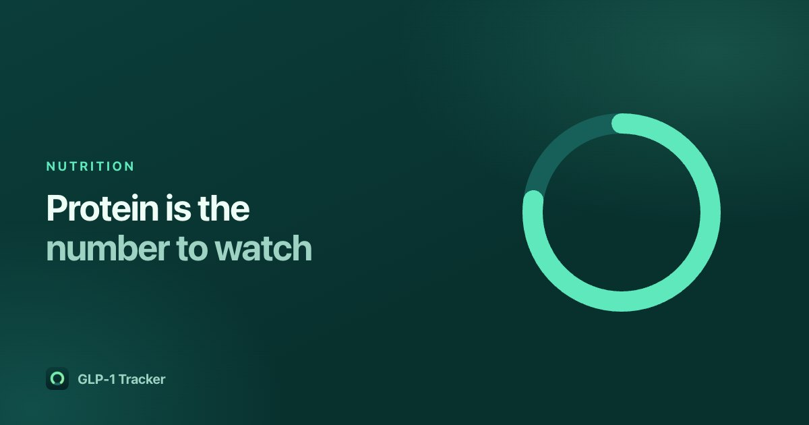

Protein on a GLP-1: why it is the number to watch

Most food trackers put calories at the top because most people using them are trying to eat fewer of them. On a GLP-1, eating less is the part that is already happening. The harder problem is what you eat within a much smaller total — and protein is the number most people are told to protect.
Why the usual advice inverts
GLP-1 receptor agonists slow gastric emptying and reduce appetite. That is the mechanism, and it works: intake drops, often sharply, often without much conscious effort. The consequence is that a calorie ceiling stops being the binding constraint. You are very unlikely to overshoot. You are quite likely to undershoot on protein, because protein-dense food is also the food that feels heaviest when you have no appetite.
Weight lost is not all fat. Some of it is lean mass, and the proportion depends partly on protein intake and resistance training. This is well-established nutrition science that long predates these medications, and it is the reason clinicians talking about GLP-1 courses talk about protein so much.
What we are not going to do here is give you a number. Protein targets depend on your body, your goal, your kidney function and what else is going on, and the person who should set yours is your prescriber or a dietitian. What follows is about the mechanics of tracking it.
Where the general figures come from
You will see roughly 1.2–2.0 g of protein per kilogram of body weight quoted in general nutrition guidance for people losing weight or maintaining muscle, with the higher end associated with an energy deficit and resistance training. Those are population-level figures from nutrition literature, not a prescription, and a clinician's number for you beats any of them.
Our app suggests a starting figure so the ring on the home screen has a denominator on day one. It uses 1.6 g per kilogram, applied to your goal weight where you have set one, with a floor at 75% of your current weight so an ambitious goal does not produce an implausibly small number. You can see that explanation inside the app, next to the number, by tapping "Why this number?" — and you can change it to whatever you were actually told.
Tracking it without tracking everything
The common failure with food logging is that it is exhausting, so people do it perfectly for nine days and then stop. A few things make it survivable:
- Log the protein sources, not the meal. If you are watching one number, you do not need to itemise the salad. The yoghurt, the chicken, the shake — those are the entries that move the figure.
- Scan the things you eat repeatedly. Most people eat a surprisingly small rotation. Scanning a barcode once and re-logging it afterwards takes seconds.
- Check the database against the label. Food data varies in quality, and it is worth spot-checking a few of your regulars. Reviews of GLP-1 apps are full of people finding protein figures that are simply wrong — one reviewer of a competing app found a tuna can listed at 16 g against a label that said 20 g. We use USDA FoodData Central and real barcode data, and it still pays to look.
- Accept partial days. A log with gaps is still more useful than no log. The trend is the point.
The other two numbers people watch alongside it
In the review corpus we analysed, the happiest users of GLP-1 apps repeat one phrase almost word for word: they track "water, protein and fiber". Those three travel together for a reason. Appetite suppression cuts fluid intake along with food, and fibre intake tends to fall with total volume — which matters given how commonly constipation comes up in these reviews. Whether any of that applies to you is a question for your clinician, not a tracker.
What this looks like in the app
Protein is the largest thing on our home screen and calories are a small tile underneath it. That is a deliberate inversion of how almost every food app is laid out, and it is the single clearest expression of what the app is for. Logging food, scanning barcodes and setting your own protein target are free, with no account.
Get GLP-1 Tracker on the App Store
Common questions
Why is protein important on a GLP-1 medication?
Appetite and total intake fall sharply on a GLP-1, and weight lost includes some lean mass as well as fat. Protein intake, alongside resistance training, is associated with preserving lean mass during weight loss. Your protein target should be set by your prescriber or a dietitian.
How much protein should I eat on Ozempic or Mounjaro?
That is a question for your prescriber or a dietitian, and depends on your body, your goal and your kidney function. General nutrition guidance for people losing weight quotes roughly 1.2 to 2.0 g per kilogram of body weight, but those are population figures rather than advice for any individual.
Do I have to log every meal to track protein?
No. Logging only the protein sources — the yoghurt, the chicken, the shake — moves the number that matters, and a log with gaps is far more useful than a log you abandon.